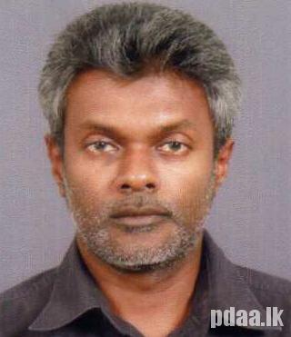

Progressive Design Associates (PDA), an award winning company of Chartered Architects, Green Building Consultants and Project Managers in Sri Lanka. During our practice since 1997 we have offered our services for varied building projects such as Personalized Houses, Housing Apartments, Multistoried Office Buildings, Factories, Restaurants, Public Buildings, Industrial Parks etc. We also undertook some oversees projects in residential, leisure and industrial sectors. PDA was appointed as the local representative of the State Government of Victoria, Australia from the year 2005 to 2010 to manage, monitor and report the post Tsunami projects that the State Government implemented in Sri Lanka In the year 2014 one of our industrial project designed and managed for Variosystems (Pvt) Ltd., at Badalgama, Sri Lanka won the 1st Platinum Green Certificate from the Green Building Council of Sri Lanka.
Maintaining close rapport with clients throughout the projects, in order to interpret their needs into three dimensional forms and spaces, innovative design solutions and efficiency on practice are the key factors we follow in our professional services. Creation and responsible management of a healthy built environment based on resource efficient and ecological principles is our theme of designs.
PDA is able to offer excellent expertise in the following
The firm comprises a team of professionally qualified specialists from different disciplines such as Structural and Civil Engineering, Electrical and Mechanical Engineering, Quantity Surveying and Landscape Design, on assignment basis to offer consortium of services if requested by clients.

Archt. Sanjaya A. Jayawardene
B.Sc. (B.E.) Hons., M.Sc. (Arch), RIBA,
IPMSL, GREEN SLR AP, FIA (S.L.)
Chartered Architect, Project Manager &
Associate Green Building Consultant.
Palika C. Jayawardene
B.Sc. (B.E.), M.Sc. (Arch), RIBA, AIA (S.L.)
Chartered Architect
Ravindra Meewaddana
B.Sc. Eng (Hons), C.Eng., MICE (London), MIE (S.L.)
Chartered Structural Engineer
Bimal Fernando
B.Sc. (Eng) Hons, C.Eng., MIE (SL), PIM.
Chartered Structural Engineer.
D .S. K. Upali Jayalath
B.Sc. QS (Hons), ACIArb, ACIOBMACost E, AIQS (S.L.)
Chartered Quantity Surveyor.
K. Shiran Jayalath
B.Sc. Eng (Mech.), AMIME (UK), AMIE (SL),
GMCIBSE
Electro-Mechanical Engineer.
Palitha Abayawardene
B.Sc. Eng (Mech.), AMIE (SL)
Mechanical Engineer.
Samantha Kaluarachchi
SLIA (S.L.), MMACSL, CSC (Arch)
Architectural Licentiate
Reg.No.: CP/KDS/PS/768 Date: 09/01/1998
ARB Registration No. : CA 98226 / CA98227
SLIA Reg. No. : PAB/R/SP/058
© 2017 PDA . All rights reserved | Developed by eGreenz